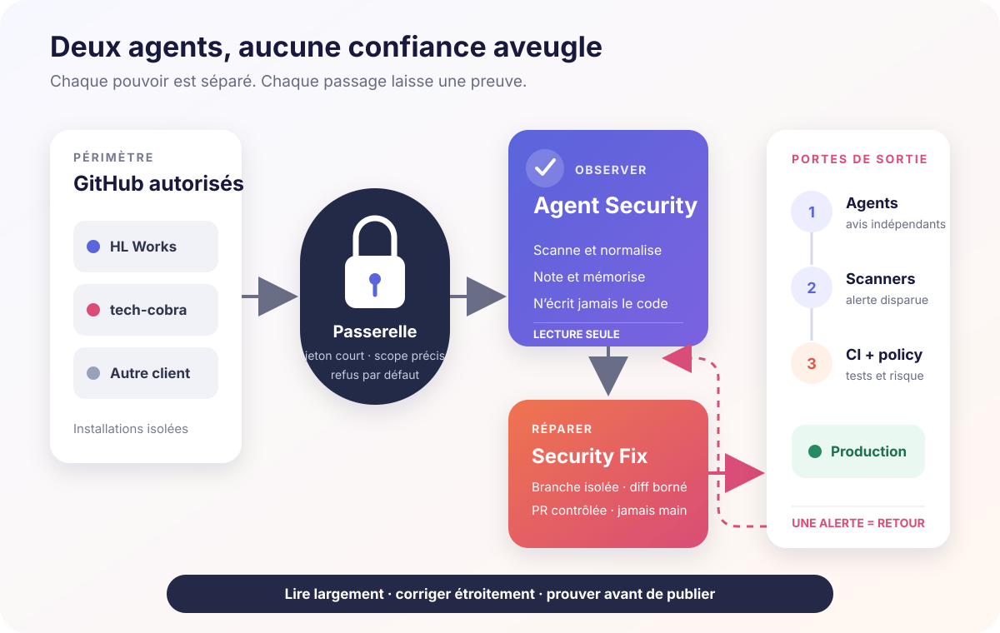
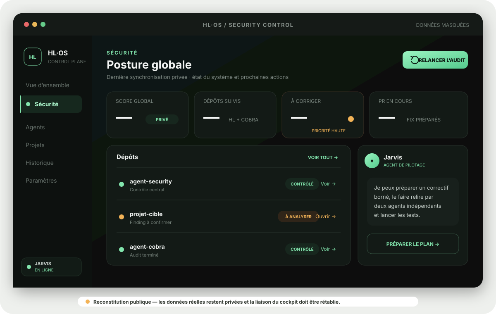
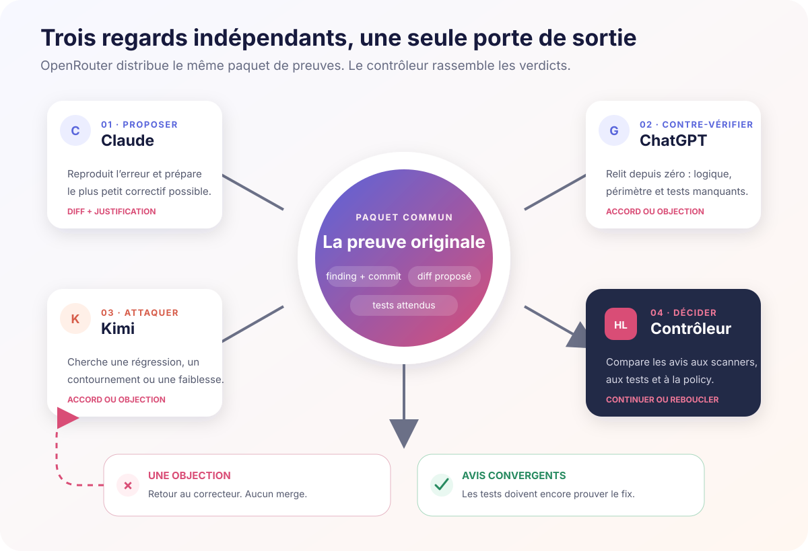

1. Le circuit complet
Un seul agent qui peut lire, modifier et publier serait confortable — et dangereux. Le système est donc découpé en deux plans de confiance. Agent Security observe. Agent Security Fix répare. Aucun des deux ne décide seul de la production.

Version très simple : le vigile peut regarder partout, mais il n’a pas les clés. Le réparateur reçoit une clé temporaire pour une seule porte. Il propose son intervention, plusieurs contrôles la vérifient, puis la porte de production s’ouvre — ou reste fermée.
2. La passerelle : un accès précis, jamais un passe-partout
Chaque organisation GitHub possède sa propre installation. Au moment du scan, la passerelle crée un jeton court, limité aux dépôts visibles et aux permissions nécessaires. Un propriétaire inconnu, un dépôt hors périmètre ou une réponse incohérente bloque l’opération.
HL Works et tech-cobra ne partagent pas un identifiant universel.
Créés au besoin, masqués et non conservés dans les rapports.
Ce qui n’est pas explicitement autorisé ne passe pas.
Ni valeur brute ni dépôt complet ne part dans les prompts.
3. Ce qui tourne automatiquement
La profondeur varie avec le risque. Inutile de refaire le contrôle le plus coûteux chaque nuit ; inutile aussi d’attendre trois mois pour découvrir un secret commité hier.
Authentification, permissions, secret, paiement, base, CI ou déploiement.
Secrets, dépendances et nouvelles vulnérabilités connues.
Analyse statique complète, conteneurs, IaC et configuration.
Menaces, supply chain, architecture et surfaces exposées.
4. Dans HL‑OS : voir, comprendre, déclencher
HL‑OS est le cockpit humain du système. Il ne remplace pas les scanners : il transforme leurs preuves en une lecture exploitable, avec un score global, les dépôts, les risques, les corrections disponibles et l’historique.

Lire les rapports privés sans afficher la valeur d’un secret.
Séparer finding confirmé, faux positif, panne d’outil et correction disponible.
Lancer un plan et suivre agents, PR, tests et revérification.
Conserver modèles, commit, refus, résultats et passage en production.
5. Une correction n’est pas une promesse : c’est une preuve
Le correcteur ne peut pas simplement répondre « c’est réglé ». Le finding d’origine est attaché à un commit précis. Après le changement, le même scanner doit être rejoué, puis les tests propres au projet.

6. Claude propose. ChatGPT vérifie. Kimi essaie de casser.
Les noms ci-dessous sont un exemple : les modèles restent configurables via OpenRouter. L’idée importante est d’utiliser des familles différentes, avec des rôles séparés, pour éviter qu’un agent valide simplement sa propre intuition.
La contre-analyse multi-modèles est disponible comme avis consultatif sur les audits manuels activés. Elle ne pilote pas encore automatiquement chaque fix jusqu’à la production.
Tout correctif éligible traverse obligatoirement cette chaîne. Une objection reboucle vers le correcteur ; l’accord ouvre seulement la porte aux tests.

Pourquoi ne pas seulement faire Claude → ChatGPT → Kimi en conversation libre ? Parce qu’une première erreur contaminerait les suivantes. Le contrôleur redonne à chacun la preuve originale et collecte un verdict structuré. Ils peuvent voir le diff, mais doivent refaire leur propre raisonnement.
7. Sous le capot
Les quatre scanners
La règle de passage
L’IA explique, corrèle et propose. Elle ne peut ni effacer une alerte technique ni transformer une panne de scanner en résultat propre.
∧ scanner_origine_vert
∧ CI_cible_verte
∧ diff_dans_allowlist
∧ politique_risque_autorisee
Mémoire et traçabilité
Chaque finding reçoit une empreinte stable sans secret, sa date d’apparition, sa dernière observation et son état : nouveau, récurrent, résolu ou rouvert. Les décisions et exceptions restent séparées dans un registre versionné ; accepter temporairement un risque ne supprime pas techniquement l’alerte.
Confidentialité des requêtes IA
Les audits programmés n’envoient rien aux modèles par défaut. Lorsqu’une analyse OpenRouter est explicitement activée, seules les métadonnées nécessaires sont transmises : jamais le dépôt complet, la valeur d’un secret ou le match brut. Les réponses sont demandées en JSON strict avec le modèle concret, son rôle, sa confiance et les findings cités.
8. Ce qui existe et ce qui reste à brancher
Lecture seule, scanners, score, mémoire et enrôlement contrôlé.
Installations distinctes pour HL Works et tech-cobra.
L’interface existe ; sa liaison aux rapports privés doit être rétablie.
Cas bornés disponibles ; toutes les familles de findings ne sont pas encore actionnables.
Avis multi-modèles disponible sur demande, pas encore obligatoire sur chaque fix.
Suivre la PR, les checks, fusionner et déployer seul uniquement sur risque faible autorisé.
Dépendance patch ou mineure, lint, configuration simple, petite modification réversible, diff strictement borné.
Secret à faire tourner, authentification, autorisation, paiement, permission, infrastructure, migration, suppression ou mise à jour majeure.
Le code du projet
- hl-works/agent-security — orchestration, scanners, mémoire et reporting.
- hl-works/agent-security-fix — validation, recettes bornées, branches et PR.
- Historique des audits — exécutions et preuves privées, accessibles uniquement aux personnes autorisées.